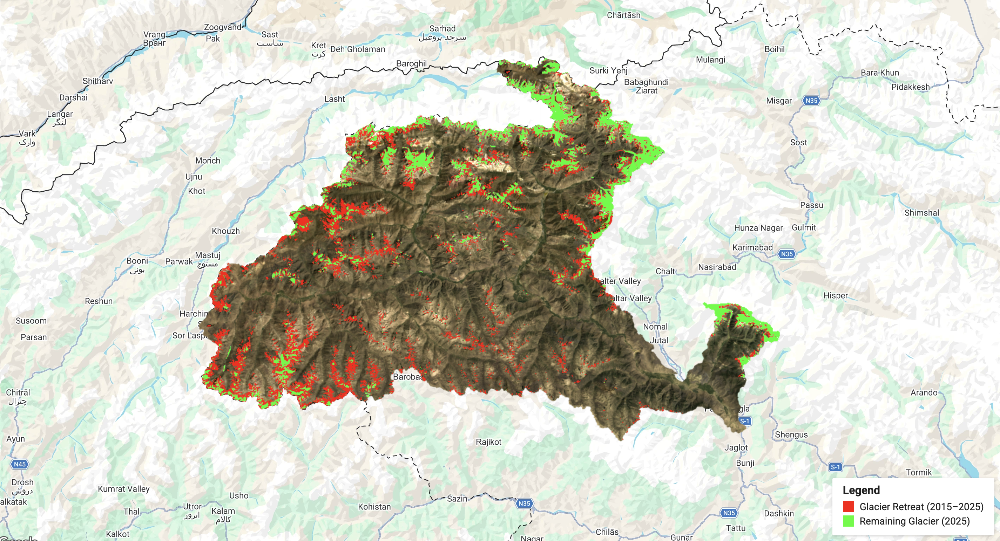
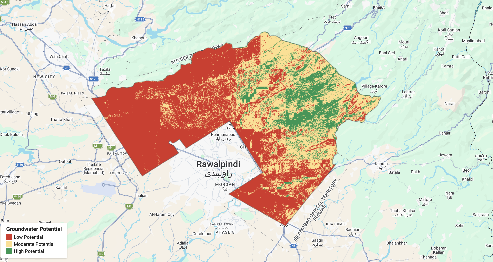
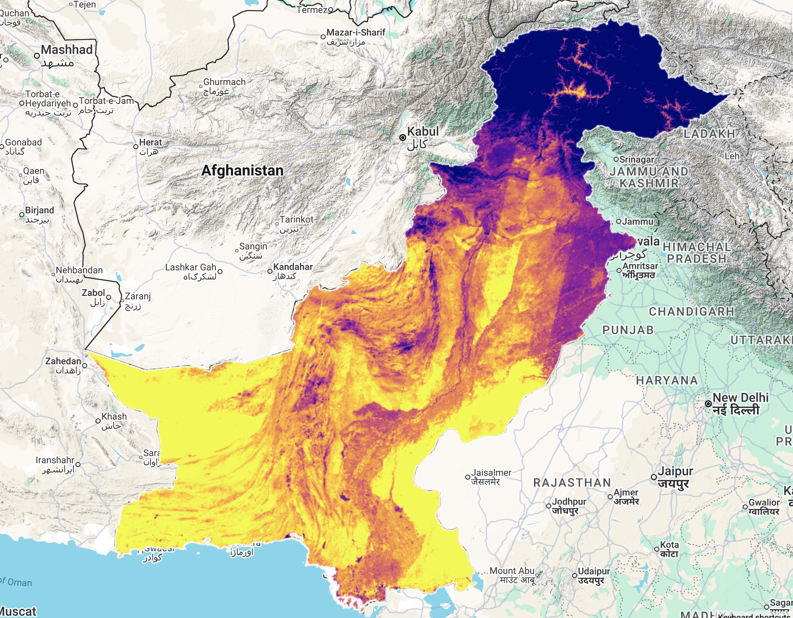
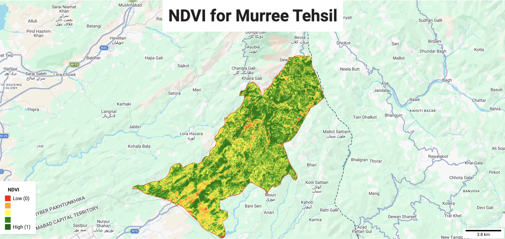
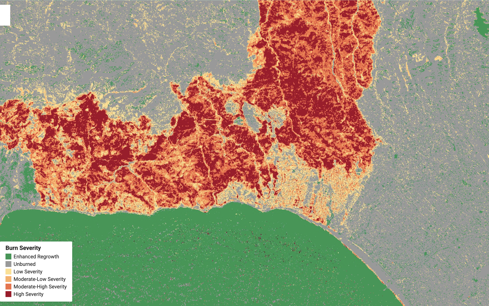
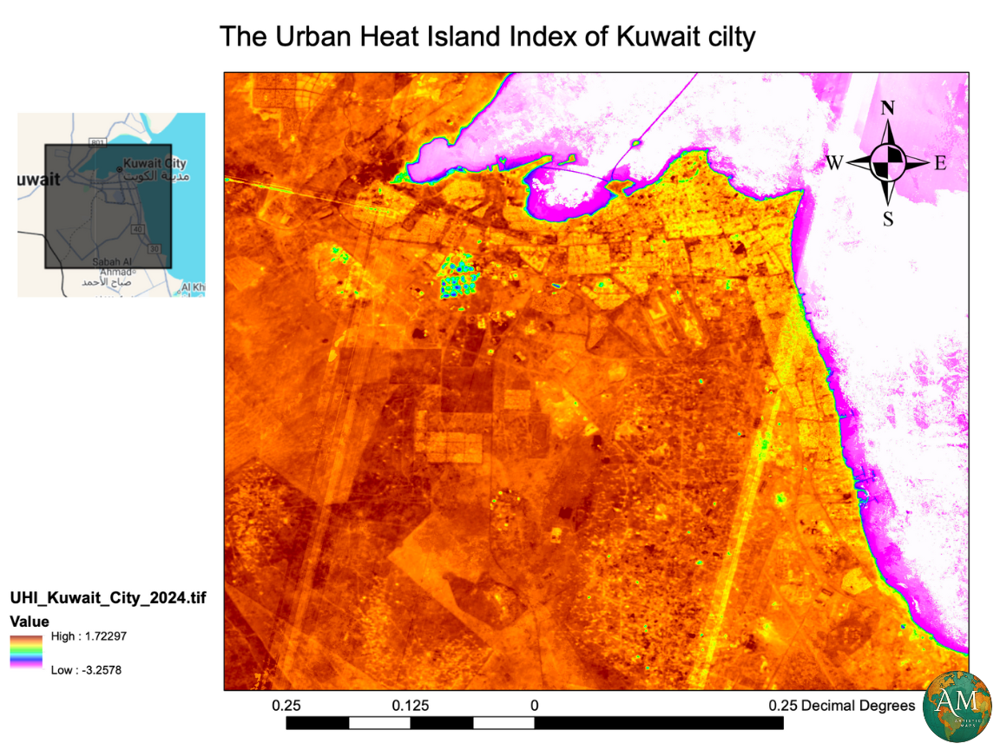
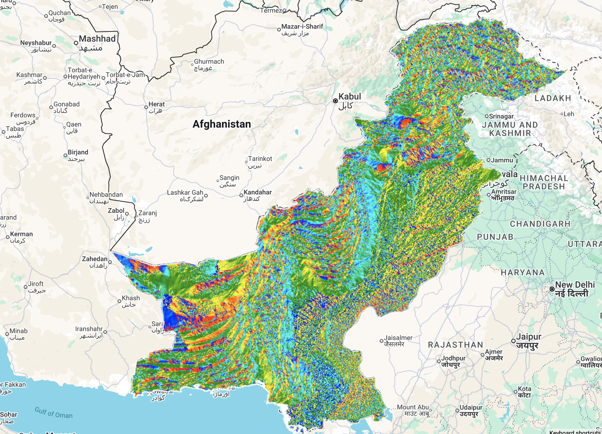

Case studyGilgit Glacier Retreat
A decade of glacier change around Gilgit, mapped from Sentinel-2 imagery to show where glaciers have retreated.
Remote Sensing & GIS
I turn satellite imagery and spatial data into clear analysis of glaciers, groundwater, vegetation, burn severity and surface temperature, using Google Earth Engine, ArcGIS, QGIS and Python.

I am a remote sensing and GIS student who builds clear, well-documented spatial analysis from satellite imagery.
I study BS Remote Sensing and GIS at COMSATS University and I am in my 7th semester. My projects use satellite imagery from several sensors and cover glacier retreat, groundwater, vegetation, burn severity and land surface temperature. I use supervised and unsupervised classification, train machine learning models for prediction, and write custom QGIS plugins to automate repeated work.
Through internships at Survey of Pakistan and the Pakistan Meteorological Department I gained practical experience in photogrammetry, UAV data collection, and the study of glaciers and weather patterns.
To grow as a remote sensing and GIS analyst by applying satellite imagery, machine learning and automation to environmental monitoring and water-resource questions, and to contribute carefully documented work to a research or applied geospatial team.
Built a Web GIS portal for Pakistan that displays real-time temperature, humidity and rainfall data through APIs.
Applied to glacier retreat, groundwater, vegetation and burn severity projects.
Train machine learning models to classify imagery and to make predictions about future change.
Hands-on experience from the photogrammetry department at Survey of Pakistan.
Built custom QGIS plugins to automate repeated workflows.
Three projects are written up as case studies, with the objective, data, workflow, validation and output. Select Read case study to open one.

Case studyA decade of glacier change around Gilgit, mapped from Sentinel-2 imagery to show where glaciers have retreated.

Case studyA GIS analysis of groundwater conditions across Islamabad for 2025, built on Sentinel-2 imagery.

Case studyLand surface temperature across Pakistan, mapped from satellite data to show how surface heat varies between regions.

Project 04An NDVI map of Murree for 2025 showing the distribution and health of vegetation across the area.

Project 05A map of wildfire burn severity around Los Angeles, built from Landsat-8 imagery to show how heavily different areas were affected.

Project 06A heat map of Kuwait City showing how temperature varies across the urban area.

Project 07A terrain map of Pakistan showing the compass direction each slope faces.
Internship
Survey of Pakistan
Gained hands-on experience with stereo imagery, building 3D models, and using UAVs to acquire data.
Internship, 2025
Pakistan Meteorological Department (PMD)
Studied glaciers, glacial lakes and weather patterns through academic and practical work. Learned to integrate Google Earth Engine, QGIS and ArcGIS into a single workflow.
Open-source desktop GIS
Used for raster analysis and map production, and for custom plugins that automate repeated workflows.
Professional GIS platform
Used for spatial analysis and cartography, and combined with QGIS and Google Earth Engine in a single workflow.
Cloud satellite analysis
Used to process satellite imagery at scale for spectral indices, classification and change analysis.
3D creation suite
Used for 3D modelling, rendering and animation, adding a visual dimension to spatial work.
2023 to present
COMSATS University
Currently in the 7th semester.
Course
NASA ARSET (Applied Remote Sensing Training)
2021 to 2023
ASAS International School
2019 to 2021
Commodores Learning Foundation
For projects, collaborations or opportunities in remote sensing and GIS, send me an email or connect on LinkedIn.
1745muji@gmail.com